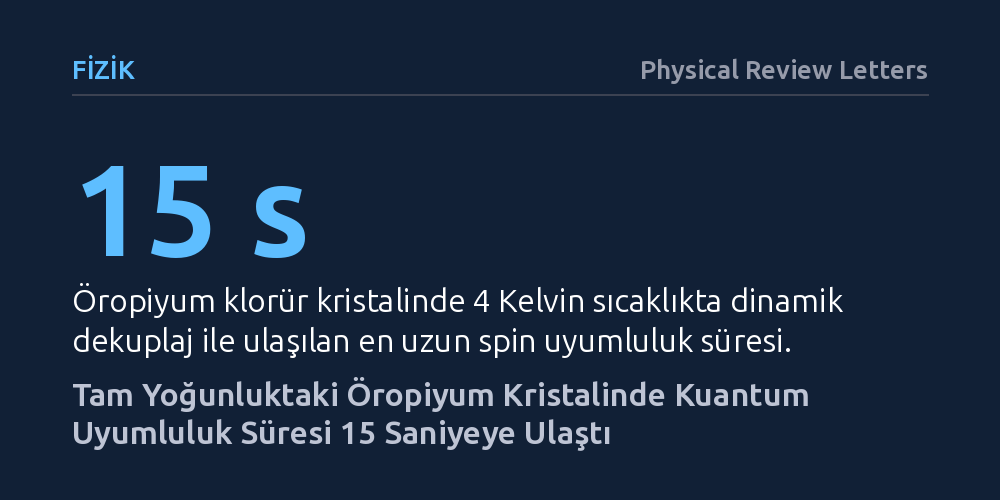

FIZIK · Physical Review Letters · 2026-10-07
Yoğun atom dizilimine sahip kristallerin kuantum belleklerde kullanılıp kullanılamayacağını araştıran fizikçiler, öropiyum temelli bir kristali inceledi. Özel bir manyetik alanda uygulanan mikrodalga darbeleriyle, kristaldeki spin uyumluluk süresi dört kat mertebe artırılarak 15 saniyeye ulaştırıldı.
Kuantum teknolojilerinde bugüne kadar yüksek atom yoğunluğunun kuantum bilgisini kaçınılmaz olarak bozduğu kabul edilirken, bu bulgu yoğun kristallerde de uzun ömürlü kuantum belleği oluşturulabileceğini kanıtlıyor.

Kuantum bilgisayarların ve kuantum internet ağlarının en temel yapı taşlarından biri, fotonlarla taşınan hassas kuantum bilgisini bozulmadan yakalayıp depolayabilen kuantum belleklerdir. Bu belleklerin verimli çalışabilmesi için iki temel özelliğin bir arada bulunması gerekir: kristalin ışığı güçlü bir şekilde soğurup etkileşime girebilmesi için yüksek atom yoğunluğu ve depolanan bilginin silinmemesi için uzun bir kuantum uyumluluk süresi.
Ancak bugüne kadar katı hâl fiziğinde bu iki gereksinimin birbiriyle bağdaşmadığı kabul ediliyordu. Kristal içerisindeki atomlar birbirine çok yaklaştığında, aralarındaki manyetik dipolar etkileşimler kaçınılmaz olarak güçlenir. Birbirini sürekli etkileyen komşu atomik spinler, kuantum bilgisinin hızla dağılmasına ve bellek süresinin mikrosaniyeler seviyesine inmesine yol açar. Bu yüzden fizikçiler genellikle kristal içerisine az sayıda nadir toprak elementi serpiştirerek atomları birbirinden uzak tutmayı tercih ediyordu.
Araştırmacıların peşine düştüğü temel soru tam olarak buydu: Atomların seyrekçe dağıtıldığı değil, kristal örgünün tamamını oluşturduğu saf ve yoğun bir yapıda, bu yıkıcı etkileşimleri susturarak kuantum bilgisini uzun süre muhafaza etmek mümkün olabilir miydi?
Araştırma ekibi bu ikilemi aşmak için öropiyum temelli stokiyometrik bir kristali (EuCl₃·6H₂O) inceledi. Bu kristalde öropiyum iyonları birer katkı maddesi olarak seyrek biçimde bulunmuyor; doğrudan kristalin ana iskeletini oluşturarak tam yoğunluk sağlıyor. Deneyler, atomların termal titreşimlerini dondurmak amacıyla mutlak sıfıra yakın bir ortam olan 4 Kelvin (-269 santigrat derece) sıcaklıkta gerçekleştirildi.
Deneyin ana stratejisi iki aşamalı bir kalkan oluşturmaya dayanıyordu. İlk olarak araştırmacılar, dış manyetik alanı kristale öyle hassas bir açı ve şiddetle uyguladılar ki, sistem sıfır birinci dereceden Zeeman (ZEFOZ) olarak adlandırılan özel bir geçiş noktasına getirildi. Bu noktada atomların enerji seviyeleri çevrelerindeki manyetik dalgalanmalardan birinci derecede etkilenmez hâle geliyordu.
İkinci adımda ise sistemi kalan gürültülerden arındırmak için mikrodalga darbelerinden oluşan dinamik dekuplaj (CPMG dizisi) yöntemi devreye sokuldu. Bu yöntem, bir müzik aletinin akordunu bozan dış sarsıntıları düzenli ritmik darbelerle sürekli sıfırlamaya benzer bir mantıkla çalışarak, öropiyum çekirdeklerinin aşırı ince spin durumlarını dış gürültülerden yalıttı.
Sıfır manyetik alan altında kristaldeki öropiyum iyonlarının spin uyumluluk süresi yalnızca 1,28 milisaniye civarındaydı. Bu süre, ışıkla atomlar arasında güvenilir bir kuantum bilgi aktarımı yapmak için yetersiz kalıyordu. Ancak ZEFOZ manyetik noktası ve dinamik dekuplaj darbeleri bir araya getirildiğinde çarpıcı bir değişim gözlendi: Kristalin spin uyumluluk süresi 15 saniyeye kadar çıktı. Bu sonuç, başlangıçtaki değerin dört kat mertebeden fazla uzatılması anlamına geliyordu.
Homojen çizgi genişliği spektroskopisiyle yapılan ölçümler, tam yoğunluktaki öropiyum iyonlarının birbirleriyle girdiği rezonant spin etkileşimlerinin ZEFOZ noktasında beklenmedik biçimde büyük ölçüde bastırıldığını ortaya koydu. Yani birbirine çok yakın duran komşu atomlar, bu özel manyetik koşul altında birbirlerinin kuantum durumlarını bozamaz hâle gelmişti.
Araştırmacılar ayrıca sistemin kararlılığını test etmek için kristale güçlü yerel manyetik parazit kaynağı olan erbiyum (Er³⁺) iyonları yerleştirdi. Bu güçlü yerel bozucuların hemen bitişiğindeki öropiyum iyonlarının bile 32 milisaniyelik bir uyumluluk süresini koruyabildiği görüldü. Bu da elde edilen kuantum kararlılığının yerel bozulmalara karşı oldukça dirençli olduğunu kanıtladı.
Bu sonuçlar, katı hâl kuantum fiziğinde uzun süredir kabul gören 'ya yüksek optik yoğunluk ya da uzun uyumluluk süresi' ikilemini ortadan kaldırıyor. Yüksek atom yoğunluğu sayesinde kristal, fotonları çok daha güçlü bir şekilde yakalayabiliyor; bu da gelecekteki kuantum belleklerin ve spin-foton arayüzlerinin çok daha kompakt ve verimli üretilebileceği anlamına geliyor.
Yine de bu başarının pratik teknolojilere dönüşmesi için aşılması gereken somut engeller bulunuyor. Sistem şimdilik sadece 4 Kelvin gibi son derece soğuk kriyojenik sıcaklıklarda ve çok hassas ayarlanmış harici manyetik alanlar altında çalışabiliyor. Ayrıca kristalin optik dalga boylarındaki gerçek bellek yazma ve okuma verimliliğinin karmaşık kuantum ağ protokollerinde ayrıntılı olarak sınanması gerekiyor.
Özetle çalışma, kristal örgüsünde seyreltmeye gerek kalmadan, saf ve tam yoğunluktaki nadir toprak kristallerinin de uzun ömürlü birer kuantum bellek ortamı olarak kullanılabileceğini göstererek malzeme ve kuantum fiziğinde yeni bir kapı aralıyor.